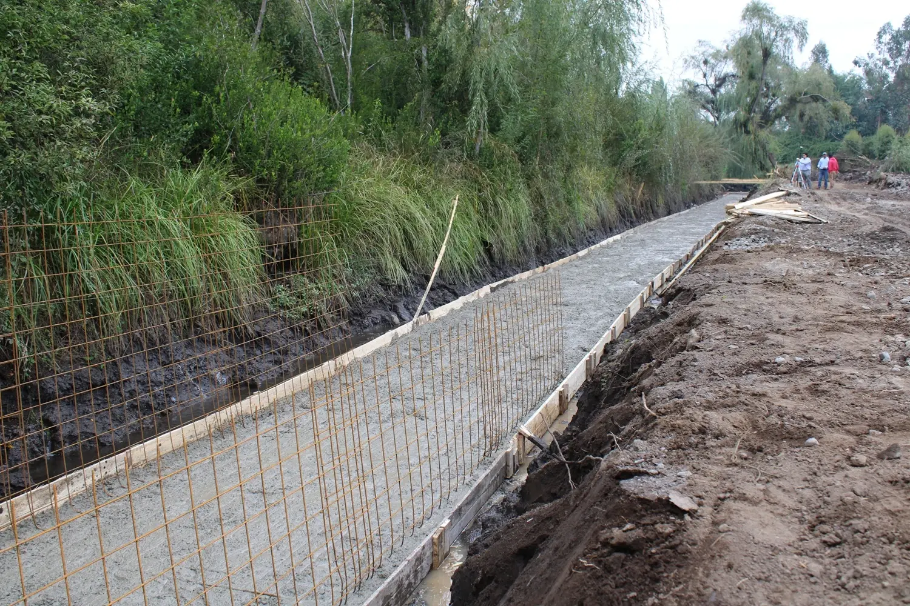
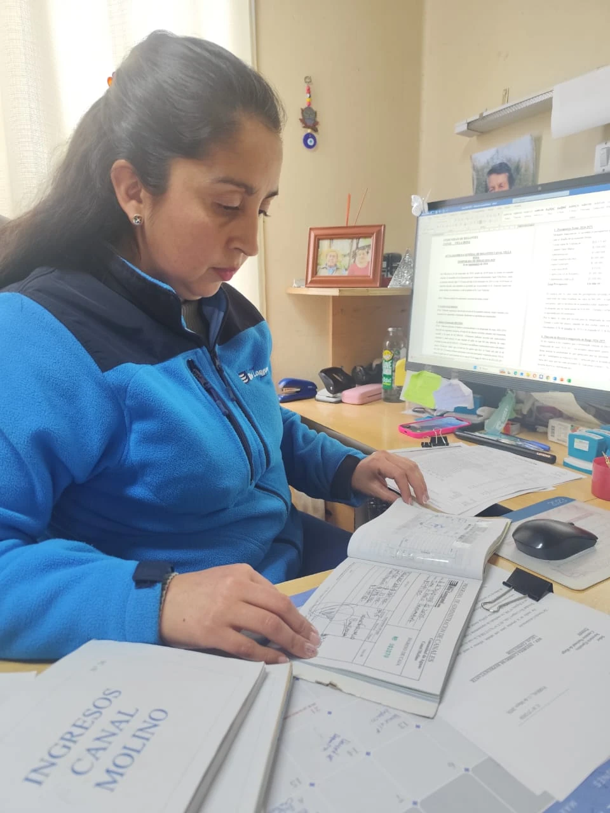
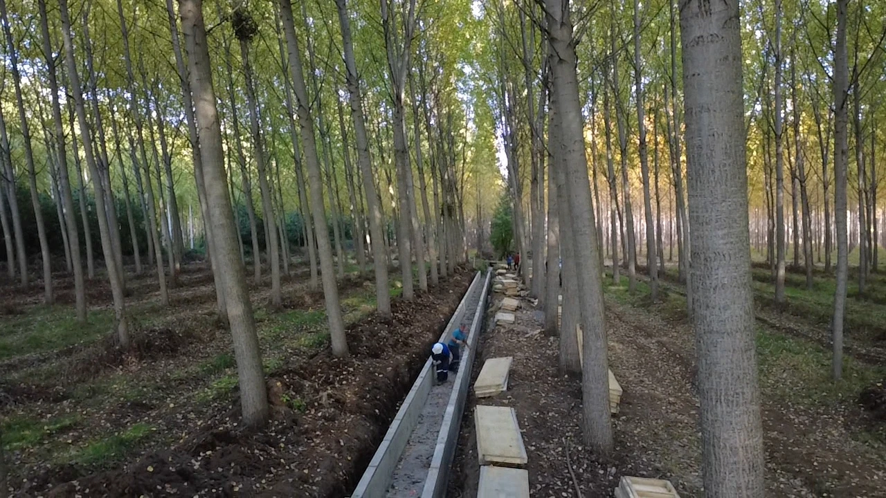

Ofrecemos un ecosistema completo de servicios diseñados para cubrir todas las necesidades de gestión hídrica: desde la instalación de tecnología de punta, asesoría legal y ejecución de obras civiles.
Instalación de sensores ultrasónicos y transmisión de datos. Nuestro sistema de telemetría permite el monitoreo continuo y remoto de caudales, niveles freáticos y volúmenes de agua en toda la red de canales. Compatible con nuestra plataforma SARCOM para visualización cada 30 minutos.

Obras civiles, revestimiento de canales y marcos de partida. Ejecutamos proyectos de infraestructura hidráulica que permiten recuperar las pérdidas de agua, mejorar la eficiencia de conducción y garantizar la durabilidad de las obras en el tiempo.

Asesoría legal y técnica para juntas de vigilancia y comunidades. Apoyamos a las organizaciones de usuarios de agua en el cumplimiento de sus obligaciones legales, la elaboración de estatutos, catastros de usuarios y la resolución de conflictos hídricos.

Diseño de ingeniería hidráulica a medida. Desarrollamos proyectos integrales de riego y manejo de recursos hídricos, desde el estudio de factibilidad y diseño hasta la ejecución y puesta en marcha, adaptados a cada realidad territorial.
